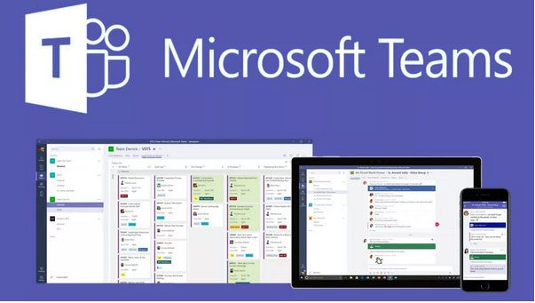

The group has approached assignment 3 in very much the same manner as the previous: work is divided up at the during the first / early meetings and then each of us works to complete the given tasks. Any issues with implementation are raised with the group so collaboration can be used to resolve them. Once complete, feedback is usually sought from the rest of the team, allowing for touch ups, polish, re-writes etc where necessary. Once their initial tasks are complete, team members can then assist each other as needed.
The group experienced issues with communication break-downs in the previous assignment however depending on the roles allocated, there may be little recourse other than to press on and to try to complete any necessary work / tasks and to re-assess contributions at the end of the assignment, if necessary.
(Source: Tech & Learning)
Due to the issues with communication in the previous assignment, the group has committed to increase weekly meetings, aiming for twice a week via Teams. Ad-hoc communication can / will be done via Teams and email.
Closer communication is likely to be required around certain areas of the project and between specific members, especially regarding the design and building of the website and the mock mobile apps. As Sam and Nima are taking the lead on this task, those two team members will likely need to stay in closer communication or schedule additional meetings to either work in tandem or clarify any issues or design particulars.
Ad-hoc requests for progress updates and check-ins will likely be a regular occurance. Increased communication is also likely to be required towards the end of the project deadline to ensure all assignment tasks have been completed and to coordinate the accurate compiling of written work and project artefacts.